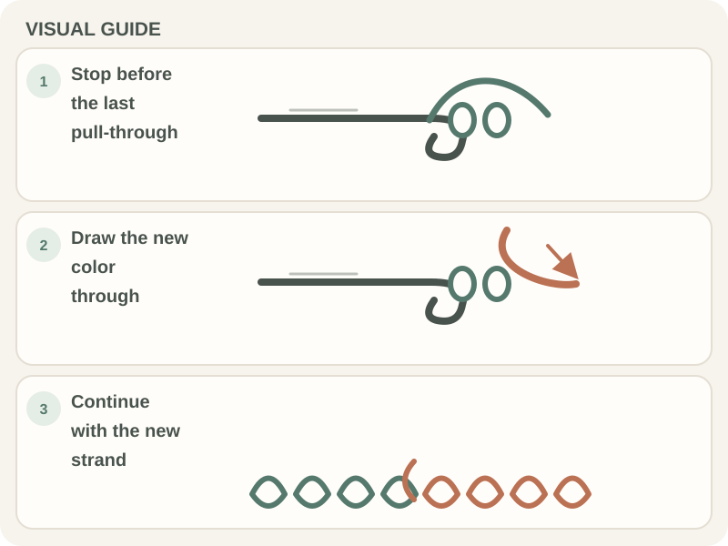

Stitches & Techniques · Beginner guide
How to Change Colors in Crochet
For a clean color change, many patterns finish the last stitch in the old color by drawing the new color through its final yarn-over.

The exact change point depends on the pattern and stitch. Prepare both strands before the last step so the new color forms the active loop.
Before you begin
Choose the change point from the pattern, then leave tails long enough to weave in. If you are following a stripe repeat, note which row or round uses each color.
Step-by-step instructions
- Work the stitch before the color change until its final yarn-over remains.

Real crochet photograph by RDNE Stock project via Pexels. - Drop the old color and yarn over with the new color, leaving a tail for finishing.
- Draw the new color through the remaining loops to complete the stitch.
- Continue with the new color and secure both tails later using a method suited to the project.

How to check your work
The completed stitch should have the new color at its top and the next active loop in that color. Check the right side before continuing so the transition lands where the pattern expects.
Common beginner problems
- A small patch of the old color shows: The change may have happened after the stitch was fully complete. Undo to the last stitch and change on its final pull-through.
- A hole forms between colors: Leave adequate tails and weave them through nearby stitches without pulling the edge tight.
- The join looks bulky: Avoid knots unless the pattern recommends them; weave each tail in a different direction.
Where the color switches
In many stitches, the new color is drawn through the loops that remain on the hook at the final pull-through. Some patterns specify a different point for crisp stripes or colorwork; use those directions.
Frequently asked questions
When do I change colors?
Use the change point stated in the pattern; commonly it is the final yarn-over of the last stitch in the old color.
Should I cut the old yarn?
Cut only if the pattern calls for it. Some stripe patterns carry yarn up an edge.
How do I secure the tails?
Weave them through the wrong side of several stitches, following the fabric path without puckering it.